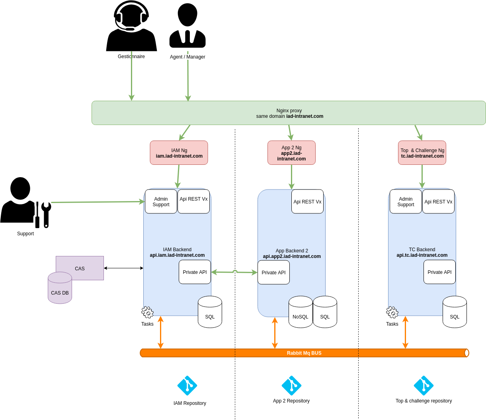

### Nouvelle architecture ## <img src="http://blog.axopen.com/wp-content/uploads/2010/07/it_architecture_consulting_big.jpg" class="heartbeet"> Juillet 2018
<p> 1. Diagramme d'architecture</p> <p class="fragment fade-up"> 2. Avantages</p> <p class="fragment fade-up"> 3. Constituion du repository</p> <p class="fragment fade-up"> 4. Bascule d'une application à l'autre</p>

## 2. Avantages * Isolation/découpage des fonctionnalités métier * Livraison plus simple avec un impact limité (versioning des apis) * Appréhension plus abordable d'un projet * Plus adapté à une grosse équipe * Dans le temps on a une complexité qui a moins tendance à croitre * Plus de liberté dans les technos sur chaque projet
## 3. Constituion du repository
## Solution 1 ```bash Repo ├── back │ ├── app │ └── other ├── front │ ├── app │ └── other ├── makefile └── README.md ```
## Solution 2 ```bash Repo ├── sf-app ├── node-app ├── ng-app ├── ng-bo-support ├── makefile └── README.md ```
## 4. Bascule d'une application à l'autre
## Questions ?